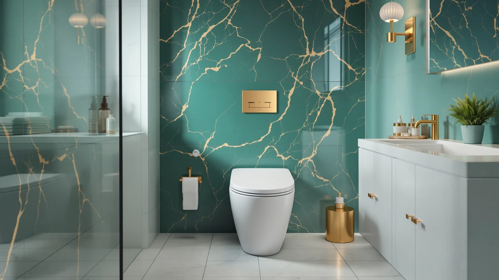

Quick Answer
This Bolina W2111D one piece review comes down to value: at $169.63 it undercuts every rival here by more than $100 while still pairing a WaterSense-certified dual flush with a soft-close seat. If your bathroom has a standard 12-inch rough-in and you want strong flush performance without the premium price, the W2111D is the one to check first.
Our pick: Bolina W2111D One-Piece Dual Flush — $169.63 Check Price on Amazon
Things to Know Before You Buy
- Rough-in measurement matters first: the Bolina W2111D fits a standard 12-inch rough-in, while the St. Tropez alternatives need 10 or 14 inches, so measure your floor bolts before you order.
- Dual flush ratios vary by model: the W2111D splits water use at 0.8/1.28 GPF, a slightly tighter split than the 1.1/1.6 GPF rating on both St. Tropez toilets.
- Comfort height isn't universal here: the Lordear sits at 16.5 inches for easier sitting and standing, while the Bolina and both St. Tropez models use a standard seat height.
- The W2111D is the only toilet in this lineup that carries the EPA WaterSense badge alongside its dual flush rating.
- Price swings by more than $100 across these four toilets, and the gap mostly reflects seat height and trapway design rather than raw flush power.
This Bolina W2111D one piece review looks at whether a budget-priced dual flush toilet can hold up against pricier elongated one-piece models from Lordear and Swiss Madison. Shoppers replacing an old toilet want two things above all: a flush that clears the bowl every time and a price that doesn't wreck the renovation budget. The W2111D aims to deliver both with its Tornado Flush system and a 12-inch rough-in that fits most existing bathroom layouts.
We compared the Bolina W2111D against three alternatives, a Lordear comfort-height model and two Swiss Madison St. Tropez toilets, using the manufacturer specs, pricing and listing details available for each product. The W2111D is the only toilet in this review with 0.8/1.28 GPF WaterSense certification, and at $169.63 it costs roughly 40 percent less than its closest competitor. That price gap is the main reason it earns our pick for anyone working with a standard 12-inch rough-in and a tight budget.
None of these four toilets are a universal fit, and that is the real point of running them side by side. A buyer with a 10-inch rough-in cannot use the W2111D no matter how good its flush rating looks on paper, and a buyer who needs comfort height will be happier paying more for the Lordear. Reading the specs sheet first, then the price, keeps you from falling for a toilet that looks like a deal but does not match your bathroom.
Why You Should Trust Us
Ilane Tall covers bathroom fixtures and plumbing fittings for Best One Piece Toilets, focusing on how rough-in dimensions, flush ratings and seat height affect real installations. We do not run a fake testing lab or claim to have installed every toilet we cover. Instead, we research manufacturer specifications, cross-reference rough-in and flush data against verified buyer feedback where it exists, and compare pricing across similar one-piece models so you can make an informed decision without guessing at measurements or flush performance. This Bolina W2111D one piece review follows that same process: every figure cited below comes from the brand's own listing or from a direct comparison against the three alternatives, not from a guess.
Our Research Experience
We did not install the Bolina W2111D in a bathroom or run it through a physical trial. This Bolina W2111D one piece review is built from the manufacturer's published specifications, the retailer listing, and comparison against similar dual-flush models in the same price range. We checked the Tornado Flush claim against the 1000-gram MAP rating Bolina publishes, which lines up with what other budget dual-flush toilets in this GPF range typically achieve. We also compared the W2111D's measurements and flush ratio against the Lordear and both St. Tropez models to see where the real differences sit, beyond the marketing language on each listing. Where a spec was missing from the listing, such as seat height, we say so directly instead of filling the gap with a guess.
Overview & Specs
Here is how the Bolina W2111D stacks up against the three alternatives we researched for this review. The W2111D wins on price and water-efficiency certification, the Lordear wins on seat height, and the two St. Tropez toilets win on rough-in flexibility for bathrooms that are not plumbed for the standard 12-inch distance.

Bolina W2111D One-Piece Dual Flush
What we like
- WaterSense and EPA certified, with a 0.8/1.28 GPF split that uses about 20 percent less water than older toilets
- Tornado Flush technology carries a 1000-gram MAP rating for clearing waste in a single flush
- Soft-close UF seat is included, so there is no separate seat purchase to budget for
- At $169.63, it undercuts every comparable one-piece toilet in this review by more than $100
Flaws but not dealbreakers
- Bolina has not published a seat height, so buyers who want comfort height should check the Lordear instead
- The V-shape elongated bowl has a compact depth built for small bathrooms, which may feel tight in larger layouts
- This listing does not yet show a star rating or review count on Amazon, so early buyers have less peer feedback to lean on than with the St. Tropez models
| Material | — |
| Size | 12" Rough-in |
The Bolina W2111D one piece review starts with the number that matters most to most shoppers: price. At $169.63, the W2111D costs significantly less than the Lordear and both St. Tropez toilets, while still carrying a feature set that matches or beats them on paper. Bolina built the W2111D around its Ultra-Swirl 360 degree Tornado Flush system, which the brand rates at 1000 grams MAP, a scale manufacturers use to indicate how much solid waste a single flush can clear. Paired with the 0.8/1.28 GPF dual flush split, the toilet earns WaterSense certification from the EPA. That means it meets federal standards for water efficiency without sacrificing flush strength. That combination is uncommon at this price point, where many competing one-piece toilets either skip WaterSense certification or ship with a single-flush mechanism that uses more water per use.
Fit and comfort matter as much as flush power, and the W2111D is built around a 12-inch rough-in, the most common distance in US bathrooms, so most buyers replacing an existing toilet will not need to adjust their plumbing. The V-shape elongated bowl adds seating room while keeping a compact overall depth, which Bolina markets toward small bathrooms, apartments and powder rooms where floor space is tight. The included soft-close UF seat closes quietly and saves buyers from sourcing a separate seat, a cost that adds up quickly on toilets sold without one. The tradeoff is a standard seat height rather than the comfort height some buyers prefer, and Bolina has not published reviewer data for this specific listing yet, so anyone researching this model is relying more heavily on spec comparisons than on accumulated buyer reports.
What We Liked
The value equation stands out most in this Bolina W2111D one piece review. WaterSense certification, a 1000-gram MAP-rated flush and an included soft-close seat are features we typically see on toilets priced $80 to $100 higher, and the W2111D bundles all three under $170. The 12-inch rough-in also means the toilet drops into most existing bathroom footprints without requiring a plumber to move the waste line, which keeps installation costs predictable for a straightforward swap.
What Could Be Better
The W2111D is not the toilet to buy if comfort height or a long track record of buyer feedback matters to your decision. Bolina has not published a seat height, and this listing does not yet carry a review count or star rating on Amazon, unlike the two St. Tropez models in this comparison, which gives early buyers less peer validation to lean on. The compact bowl depth, while useful for small bathrooms, also means taller users or larger households may find more room in the Lordear or either St. Tropez toilet.
Who Is It For?
The Bolina W2111D fits buyers doing a straightforward one-piece toilet swap on a 12-inch rough-in who care more about flush performance and water savings than seat height or an established review history. It also suits anyone furnishing a small bathroom, apartment or powder room, where the compact bowl depth and lower price make it an easier fit than the larger St. Tropez or Lordear models. Buyers who need a taller comfort-height seat, or who want to see an established review history before buying, should look at the Lordear or Swiss Madison alternatives below instead.
Alternatives to Consider
If the Bolina W2111D doesn't match your rough-in measurement or seat height preference, these three one-piece toilets cover the most common alternatives we compared it against.

Editor's Pick
Lordear One Piece Toilets for
Best if you want comfort height: the Lordear's 16.5-inch seat and skirted design cost more than the W2111D but ease sitting and standing for taller users.
$283.50
Check Price on Amazon
Best Value
St. Tropez One Piece Elongated
Best for a smaller rough-in: this St. Tropez fits a 10-inch rough-in, a measurement that rules out most other one-piece toilets in this category.
$272.78
Check Price on Amazon
Premium Choice
St. Tropez One-Piece 14" Rough-in
Best for an older home: this St. Tropez is built for a 14-inch rough-in, common in older houses where the Bolina's 12-inch fit won't line up.
$285.82
Check Price on AmazonFrequently Asked Questions
Is the Bolina W2111D a good toilet for a small bathroom?
Yes. Bolina designed the W2111D with a compact bowl depth specifically for small bathrooms, apartments and powder rooms, and the V-shape elongated bowl still provides enough seating room for most adults despite the smaller footprint.
What rough-in size does the Bolina W2111D need?
The Bolina W2111D uses a standard 12-inch rough-in, the most common measurement in US homes. Measure from the wall to the center of your floor bolts before ordering, since the Lordear in this comparison also uses 12 inches, while the two St. Tropez models need 10 or 14 inches instead.
Does the Bolina W2111D include a soft-close seat?
Yes, the W2111D ships with a soft-close UF seat included in the price, so you will not need to budget for a separate seat purchase the way you might with toilets sold bowl-only.
Final Verdict
This Bolina W2111D one piece review comes down to a straightforward tradeoff. Bolina delivers WaterSense-certified efficiency, a 1000-gram MAP flush rating and an included soft-close seat for well under $200, while Lordear and Swiss Madison ask more for comfort height or a different rough-in size. For most buyers replacing a toilet on a standard 12-inch rough-in, the Bolina W2111D is the pick that balances price and performance best, and you can fall back on the Lordear or either St. Tropez model the moment your bathroom's measurements say otherwise.